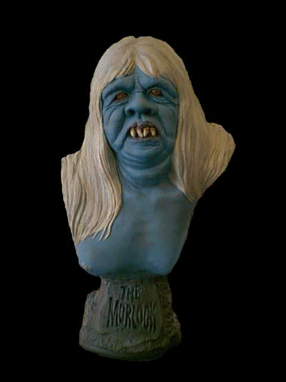
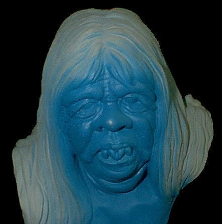
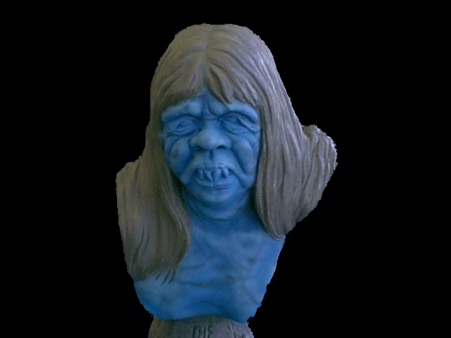
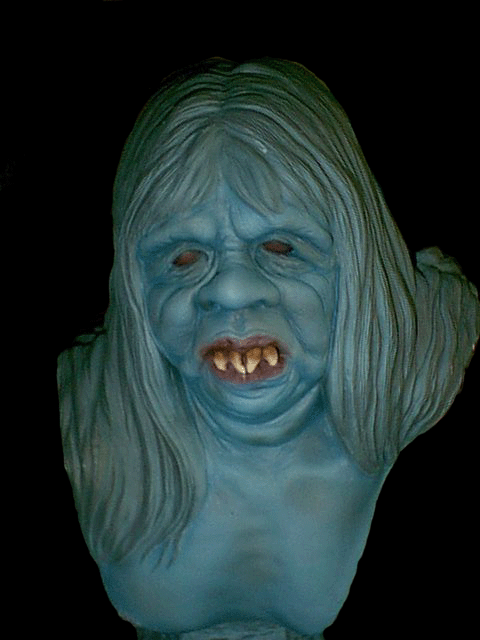

Welcome fellow modelers to my first building and painting article for Gremlins in the Garage. My intention is to share ideas for building and painting garage kits. I will also highlight some of the better garage kits that are currently available for model users. Each article will feature or discuss lesser-known, yet worthwhile model kits. In this way the article will give new light to excellent models.
For this installment I will be working on two finely sculpted kits by special effects artist Russ Lukich. Lukich has worked on TV shows like Buffy the Vampire Slayer and Angel. He is now working at the Stan Winston Studios. Russ has done expert work in capturing the likeness of great 1/3-scale characters. His Morlock from the Classic science fiction movie The Time Machine is revealing.
The other model is from the 1979 TV movie Salem’s Lot, featuring what some says is one of the most terrifying vampire characters of all time, Barlow, The Master. The Morlock is a one piece casting, whereas, the Master includes the bust and fangs. Both busts are sculpted with intricate based which uses the themes from the movies.
In preparation for the kits I first washed them with hot soap and water. Then premiered them with Dupli-Color scratch fill and primer. (This can be picked up at most auto supply stories.) This primer works effectively on vinyl and resin. I will also be painting these busts using Badgers freak flex line and Com-Art. If these paints are not available, any brand of paints will work.
The first kit I will discuss is the Master. First the base coat should be Tan Flesh. Then lightly mist it with After Midnight Blue, however, be sure to leave the second base coat thin enough to see through the Tan Flesh. I then added highlights by mixing the base with Bleach Bone Tan. I sprayed in a broken pattern over the high points of the face. At this point in the process Dry Blood Red was lightly airbrushed over the sculpted veins. Dry Blood Red was also applied to the mouth and eye area I then applied highlights by feathering Grave Stone Gray and Tan Flesh over the bust.

This extra touch gives Barlow an effective "dead" look. His eyes were base coated with Oozing Yellow.

Then misted with Dried Blood Red. This painted design created a dazzling Orange color. Painting smaller circles of Oozing Acid, Cat’s Eye, and Cowards Yellow over each other applied the irises. A black pupil was then added to finish the eyes. I applied a coat of Bleach Bone Tan for Barlow’s teeth. In order to give the teeth a worn look, Com Art’s Burnt Umber and Transparent Black were painted over the teeth. This helped finish the fleshy areas.

The Master’s robe was base coated black then highlighted with Dried Blood Red. The necklace was dry-brushed Gold. Barlow’s base was base coated with Road Rash Brown then highlighted Cursed Earth and Wooden Stake. I then applied the same colors to his coffin but added a highlight with Grave Stone Gray and a wash of Burnt Umber. The cellar door was base coated with Road Rash Brown, then washed with Burnt Umber.

When tackling the hand coming out from under the door it was given a base coat of Frankenstein Flesh then washed with Transparent Black. His lock on the cellar door was coated Black the Dry-brushed with Silver. The stone work for the Master’s base was first base coated with Near Black, then highlighted with Banshee’s Gray. Gang Green was added to ends of the stones to give them a mossy look. After this design, the Master was a sight, a sight for all that enjoy a good dead look to see.

Another enticed model kit is The Morlock. The Morlock was base coated with a mixture of Warlock Blue, Asphyxia Blue, and Grave Stone Gray.

The highlights were then applied by mixing the base coat with Grave Stone Gray. This allowed for a more perfect highlight color. Spraying Bewitched Blue into all the recesses enhanced a shadow effect.

Warlock Blue was added to the bust to break the skin pattern and allow the flesh to look more alive. In order to tie all the colors together, an even lighter version of the base color was applied to the bust.

The Morlock received a base coat of Banshee’s Gray to the hair. Highlights of Pearl White and Turn Ghost White were then applied along with a wash of Grave Stone Gray.

The eyes were base coated Dried Blood red then sprayed Gold. Next, the mouth area was base coated with Dried Blood Red, whereas, the teeth were base coated with Bleach Bone Tan, along with a shadowed effect with Burnt Umber.

The stone areas were painted as the same as the Masters. The skulls and bones in the base were coated with Bleach Bone Tan, and then they were misted with Nicotine Yellow and washed with Burnt Umber. The entranceway was airbrushed with Crusted Earth and Wooden Stake. The shynx head was base coated with Road Rash Brown, then misted with Gold.
Both of these kits were sealed with Testors Dull Coat and the eyes and teeth with Pactra Gloss Coat. After the model kits were completed, one can see how an effect can be enhanced with just a little imagination, an airbrush, and some paints. These kit’s can be purchased from Squid Kitz Studios this is a company to keep your eye on. Squidzkitz.com will be offering more excellent kits in the future. They’ll be offering more kits sculpted by Russ Lukich and other fine artists. (Keep your eyes open for another article on some more kits sculpted by Russ Lukich) These artists featured on their site will be available for commission work. If anyone is interested in contacting Russ for any commissions or any of the other artists they can be reached through Squidzkitz.com. Check out www.squidzkitz.com for the latest releases by Russ Lukich and they’re other fine artists. Until next time
Walter J. Evans
The Gremlins in the Garage webzine is a production of Firefly Design. If you have any questions or comments please get in touch.
Copyright © 1994-2000 Firefly Design.